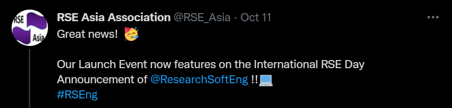

The RSE Story
Mike Croucher
Principal Customer Success Engineer
MathWorks
@walkingrandomlymcrouche@mathworks.com
https://www.linkedin.com/in/mike-croucher-32336113/
October 14th 2021
Launch event of RSE Asia
https://www.youtube.com/watch?v=iffuccOFJn4
Tributes and events from around the world
You may have questions!
What is Research Software Engineering?
Why is it so important?
What does it have to do with you?
Some history
EPSRC: 2009
There appears to be a lot of software out there...
...someone should really do something about it
2010: Software Sustainability Institute

Originally funded by EPSRC
Now funded by all 7 research councils

Who is using research software?
What Software are they using?
We have a problem!

No career path for software experts in academia
Too much Software?
No Papers?

My job title at the time
IT Officer
My job title after much effort
IT Officer (Research)
Me: 2009
- Terrified of IT restructures. Role not formally recognised
- Felt trapped at my host University
- Research Software Accident and Emergency
- Many people valued me but the system did not
- Then everything started to change......
We got a name
What is an RSE?
We got financial support
SSI Fellowships
EPSRC RSE Fellowships
~£3 million for 7 people for 5 years
We got organised
We got journals....
...and ways to directly cite software
We got our own REF!
Northumbria has some excellent research software!
What's next in the RSE story?
You